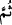

İlk dönem âlimlerinden birisi şöyle demiştir: Üzerinde Allah’ın nimetleri görünen
kimse Allah’a çokça hamdetsin. Üzüntü ve kederi artan kimse de çokça istiğfarda
bulunsun.
Bilesin ki varlıkta Allah’tan başkasını görmeyecek şekilde tevhid denizine dalan
kimse yalnızca Allah’a iltica eder. Her hâl ü kârda kaçış yalnızca O’nadır. Görüntüler,
şekiller (mazâhir) ve mahaller ise sebeplerden başka bir şey değildir.
Mesnevî’de denir ki:
Ey oğul! Gerçi gölge insanın yansımasıdır
Ancak gölgeden hiç bir fayda elde edemezsin
Kendine gel de gölgeyi görünce adamı ara
Sebebi geç, sebebi yaratana yürü
“Sonra Allah onları tevbeye muvaffak kıldı ki tevbe etsinler.” günahtan dönsünler.
Bilesin ki âyette üç husus vardır:
1. Allah’ın onları tevbeye muvaffak kılması. Buna âyetin “sonra onları tevbeye
muvaffak kıldı.” kısmı delalet etmektedir.
2. Tevbenin kendisi: Buna da âyetin “ki tevbe etsinler” kısmı delalet etmektedir.
3. Allah Teâlâ’nın tevbeyi kabul etmesi. Buna ise “Ve geri bırakılan üç kişinin de
tevbesini kabul buyurdu” kısmı delalet etmektedir.
Birinci husus, üçüncüye “__WORD__ (sonra)” edatı ile atfedilmiştir. Çünkü o hepsinin aslıdır,
ayrıca üçüncüden iki mertebe daha öndedir. Bu durumda “__WORD__ (sonra) ” edatı “mertebe
yönünden sonra gelme” mânâsını ifade etmektedir.
Âyetin “Sonra onları tevbeye muvaffak kıldı ki tevbe etsinler” şeklinde mânâ
verilen kısmına şu şekilde mânâ vermek de mümkündür: “Sonra onların tevbelerini
kabul buyurdu, yani tevbelerinin kabul edildiğine dair vahiy indirdi ki tevbe etsinler,
yani tevbe edenlerden olsunlar ve onlardan sayılsınlar.” Bu mânâya göre “ ” edatı aslî
mânâsını (yani zaman yönünden sonra olmayı) ifade eder. Çünkü tevbelerinin kabulünün
indirilmesi, “ve geri bırakılan üç kişinin de tevbesini kabul buyurdu” kavlinde
zikredilen kabûle bina edilmiştir.
“Allah, tevbeyi çok kabul eden, çok esirgeyendir.” Allah, tevbe edenlerin günde yüz
kere dönseler de tevbelerini çok kabul eden, her türlü azabı hak etmelerine rağmen
onlara çeşit çeşit nimetlerini ihsan edendir.
Senin lütfunun yetişmezse yardımı
Hem tevbe bozulmuş olur, hem yemin
Tevbe senin kabul edeceğin ümidiyle yapılır
Sen kabul etmezsen, tevbe tevbe olmaz